토목기사 (2007-05-13 기출문제)
1과목: 응용역학
1. 다음 역계에서 합력의 위치 X의 값은?
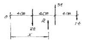
- 6cm
- 9cm
- 10cm
- 12cm
(정답률: 60%)

2. 다음 그림과 같은 단순보에서 최대 휨모멘트가 발생하는 위치는? (단, A점으로 부터의 거리)
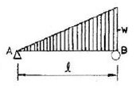
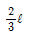
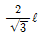
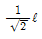
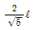
(정답률: 57%)
3. 지름이 d인 원형 단면의 핵(core)의 지름은?
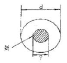
- d/2
- d/3
- d/4
- d/6
(정답률: 72%)
4. 주어진 T형보 단면의 캔틸레버에서 최대 전단 응력을 구하면 얼마인가? (단, T형보 단면의 INA=86.8cm4이다.)
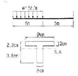
- 1256.8 kg/cm2
- 1797.2 kg/cm2
- 2079.5 kg/cm2
- 2432.2 kg/cm2
(정답률: 40%)
5. 정삼각형의 도심을 지나는 여러 축에 대한 단면 2차 모멘트 값에 대한 다음 설명 중 옳은 것은?
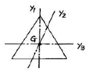
- Iy1>Iy2
- Iy2>Iy1
- Iy3>Iy2
- Iy1=Iy2=Iy3
(정답률: 70%)
6. 두 주응력의 크기가 아래 그림과 같다. 이 면과 θ=45°를 이루고 있는 면의 응력은?
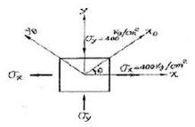
- σθ=0kg/cm2, τ=0kg/cm2
- σθ=800kg/cm2, τ=0kg/cm2
- σθ=0kg/cm2, τ=400kg/cm2
- σθ=400kg/cm2, τ=400kg/cm2
(정답률: 58%)
7. 그림과 같은 단순보에서 허용휨응력 fha=50kg/cm2, 허용전단응력 τa=5kg/cm2일 때 하중 P의 한계치는?
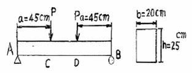
- 1666.7kg
- 2516.7kg
- 2500.0kg
- 2314.8kg
(정답률: 60%)
8. 그림과 같은 일단 고정보에서 B단에 MB의 단모멘트가 작용한다. 단면이 균일하다고 할 때 B단의 회전각 θB는?
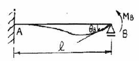
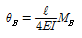
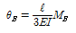
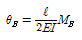
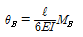
(정답률: 25%)
9. 그림과 같이 길이가 이고 9.5m 휨강도(EI)가 100tㆍm2인 기둥의 최소 임계하중은?
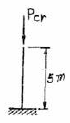
- 8.4t
- 9.9t
- 11.4t
- 12.9t
(정답률: 55%)
10. 다음 그림과 같은 라멘에서 D 지점의 반력은?
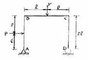
- 0.5P(↑)
- P(↑)
- 1.5P(↑)
- 2.0P(↑)
(정답률: 65%)
11. 다음 부정정 보에서 B점의 반력은?
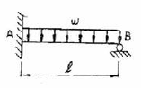
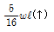
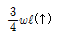
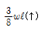
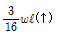
(정답률: 60%)
12. 그림과 같은 강재(steel) 구조물이 있다. AC, BC부재의 단면적은 각각 10cm2, 20cm2이고 연직하중 P=9t이 작용할 때 C점의 연직처짐을 구한 값은? (단, 강재의 종탄성계수는 2.⑤×106kg/m2이다.)
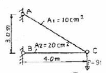
- 1.022cm
- 0.766cm
- 0.518cm
- 0.383cm
(정답률: 63%)
13. 오른쪽 그림과 같은 연속보에서 지점 모멘트 MB는? (단, EI는 일정하다.)
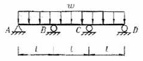
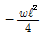
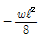
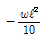
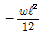
(정답률: 46%)
14. 다음 도형의 도심축에 관한 단면2차 모멘트를 Ig, 밑변을 지나는 축에 관한 단면2차 모멘트를 Ix라 하면 Ix/Ig값은?
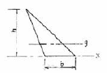
- 2
- 3
- 4
- 5
(정답률: 43%)
15. 다음 그림과 같은 보에서 A점의 반력이 B점의 반력의 두 배가 되도록 하는 거리 x의 값으로 맞는 것은?
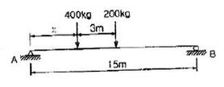
- 2.5m
- 3m
- 3.5m
- 4m
(정답률: 63%)
16. 균일한 단면을 가진 캔틸레버보의 자유단에 집중하중P가 작용한다. 보의 길이가 L일 때 자유단의 처짐이 △라면, 처짐이 약9△가 되려면 보의 길이 L은 몇 배가 되어야 하는가?
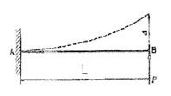
- 1.6배
- 2.1배
- 2.5배
- 3.0배
(정답률: 35%)
17. 그림에서 P1이 C점에 작용하였을 때 C및 D점의 수직 변위가 각각 0.4cm, 0.3cm이고, P2가 D점에서 단독으로 작용하였을 때, C, D점의 수직 변위는 0.2cm, 0.25cm였다. P1과 P2가 동시에 작용하였을 때 P1P2가 하는 일을 구하면?
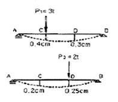
- 1.25tㆍm
- 1.45tㆍm
- 2.25tㆍm
- 2.45tㆍm
(정답률: 30%)
18. 지간 10cm인 단순보 위를 1개의 집중하중 P=20t이 통과할 때 이 보에 생기는 최대 전단력 S와 휨모멘트 M이 옳게 된 것은?
- S=10t, M=50tㆍm
- S=10t, M=100tㆍm
- S=20t, M=50tㆍm
- S=20t, M=100tㆍm
(정답률: 43%)
19. 다음 트러스의 부재 U1L2의 부재력은?(문제 오류로 그림이 정확하지 않습니다. 정답은 1번 입니다.)
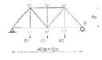
- 2.5t(인장)
- 2t(인장)
- 2.5t(압축)
- 2t(압축)
(정답률: 47%)
20. 다음과 같은 단면의 지름이 2d에서 d로 선형적으로 변하는 원형단면부에 하중P가 작용할 때, 전체 축방향 변위를 구하면? (단, 탄성계수 E는 일정하다.)
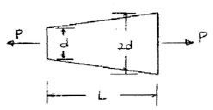
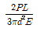
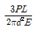
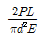
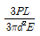
(정답률: 31%)
2과목: 측량학
21. 어느 각을 관측한 경과 다음과 같다. 최확값은? (단, 괄호 안의 숫자는 경중룰을 표시함)
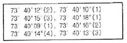
- 73° 40‘ 10.2“
- 73° 40‘ 11.6“
- 73° 40‘ 13.7“
- 73° 40‘ 15.1“
(정답률: 57%)
22. A의 좌표가 (x=3120.26m, y=4216.32m)이고 B의 좌표가 (x=1829.54m, y=3833.82m)일 때 BA의 방향각은?
- 16° 30‘ 25“
- 163° 29‘ 39“
- 196° 30‘ 25“
- 343° 29‘ 39“
(정답률: 44%)
23. 경사가 일정한 두 점 AB 사이에 표고 130m의 등고선은 점 B로부터 수평거리로 얼마만큼 떨어져 있는가? (단, AB간의 수평거리 : 200m, A점의 표고 : 143m, B점의 표고 : 121m)
- 81.8m
- 118.2m
- 76.4m
- 123.6m
(정답률: 39%)
24. 전 길이를 n구간으로 나누어 1구간 측정시 3mm의 정오차와 ±3mm의 우연오차가 있을 때 정오차와 우연오차를 고려한 전 길이의 확률오차는?
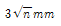
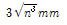
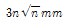
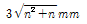
(정답률: 34%)
25. 다음과 같은 수준측량에서 B점의 지반고(Elevation)는 얼마인가? (단, α=12°13'00", A점의 지반고=46.4m, 기계고=1.54m, Rod Reading=1.30m, AB(수평거리)=46.8m)
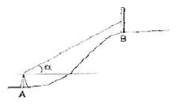
- 55.23m
- 56.53m
- 56.77m
- 58.07m
(정답률: 30%)
26. 어떤 횡단면적의 도상면적이 40.5cm2였다. 가로 축척이 1/20, 세로 축척이 1/60 이었다면 실제 면적은?
- 48.6m2
- 33.75m2
- 4.86m2
- 3.375m2
(정답률: 32%)
27. 노선측량에서 단곡선을 설치할 때 정확도는 좋지 않으나 간단하고 신속하게 설치할 수 있는 1/4법은 다음 중 어느 방법을 이용한 것인가?
- 편각설치법
- 절선편거와 현편거에 의한 방법
- 중앙 종거법
- 절선에 대한 지거에 의한 방법
(정답률: 54%)
28. 하천 양안의 고저차를 측정할 때 교호수준 측량을 많이 이용하는 가장 큰 이유는 무엇인가?
- 기계오차 및 광선의 굴절에 의한 오차를 소거하기 위하여
- 스타프(함척)를 세우기 편하게 하기 위하여
- 개인 오차를 제거하기 위하여
- 과실에 의한 오차를 제거하기 위하여
(정답률: 62%)
29. 다음은 지성선에 관한 설명이다. 옳지 못한 것은?
- 지성선은 지표면이 다수의 평면으로 구성되었다고 할 대 평면간 접합부, 즉 접선을 말하며 지세선이라고도 한다.
- 철(
 )선을 능선 또는 분수선이라 한다.
)선을 능선 또는 분수선이라 한다. - 경사변환성이란 동일 방향의 경사면에서 경사의 크기가 다른 두면의 접합선이다.
- 요(
 )선은 지표의 경사가 최대로 되는 방향을 표시한 선으로 유하선이라고 한다.
)선은 지표의 경사가 최대로 되는 방향을 표시한 선으로 유하선이라고 한다.
(정답률: 57%)
30. 다음 중에서 평판측량의 후방 교회법에 대한 설명으로 옳은 것은?
- 세 기지점에 평판을 세워서 미지점의 위치를 결정하는 방법이다.
- 한 미지점에 평판을 세우고 기지점을 이용해서 미지점의 위치를 결정하는 방법이다.
- 두 기지점에 평판을 세워서 미지점의 위치를 결정하는 방법이다.
- 기지점과 기지점을 연결하여 현황을 작성하는 평판측량 방법이다.
(정답률: 63%)
31. 다음은 삼변측량에 대한 설명이다. 틀린 것은?
- 삼각픅량에서 수평각을 관측하는 대신에 삼변의 길이를 관측하여 삼각점의 위치를 구하는 측량이다.
- 삼각측량에 비하여 조건식의 수가 적다.
- 전자파, 광파를 이용한 거리측량기의 발달로 높은 정밀도의 장거리를 측량할 수 있게 됨으로써 삼변측량법이 발달되었다.
- 삼변측량에서 변장 측정값에는 오차가 없는 것으로 가정한다.
(정답률: 32%)
32. 다음은 클로소이드곡선에 관한 설명이다. 옳은 것은?
- 곡률반경R, 곡선길이L, 매개변수A와의 관계식은 RL=A이다.
- 곡률반경에 비례하여 곡선길이가 증가하는 곡선이다.
- 곡선길이가 일정할 때 곡률반경이 커지면 접선각은 작아진다.
- 곡률반경과 곡선길이가 매개변수A의 1/2인 점(R=LA/2)을 클로소이드 특성점이라 한다.
(정답률: 20%)
33. 삼각점 C에 기계를 세울 수 없어서 2.5m 편심하여 B에 기계를 설치하고 T'=31° 15' 40"를 얻었다. 이때 T는? (단, ρ=300° 20‘, S1=2km, S2=3km)
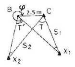
- 31° 14' 49"
- 31° 15' 18"
- 31° 15' 29"
- 31° 15' 41"
(정답률: 39%)
34. 초점거리가 200mm인 카메라로 촬영고도 1000m에서 촬영한 연직사진이 있다. 지상 연직점으로부터 200m 떨어진 곳의 비고 400m인 산정에 대한 기복변위는?
- 16mm
- 18mm
- 81mm
- 82mm
(정답률: 48%)
35. 수준측량에서 2km의 왕복관측의 오차 제한을 1.5cm로 할 경우 4km의 왕복관측에 대한 왕복허용 오차는?
- 1.6m
- 2.1m
- 2.6m
- 3.3m
(정답률: 29%)
36. 절대표정(대지표정)에 관련된 사항으로 틀린 것은?
- 수준면(또는 경사조정)의 결정
- 위치의 결정
- 화면거리의 결정
- 축척의 결정
(정답률: 33%)
37. 37. 원곡선의 주요점에 대한 좌표가 다음과 같을 때 이 원곡선 교각(I)은 얼마인가? (단, 교점(I.P)의 좌표: X=1150.0m, Y=2300.0m, 곡선시점(B,C)의 좌표: X=1000.0m, Y=2100.0m, 곡선종점(E.C)의 좌표: X=1000.0m, Y=2500.0m)
- 90° 00‘ 00“
- 73° 44‘ 24“
- 53° 07‘ 48“
- 36° 52‘ 12“
(정답률: 32%)
38. 다음 중 완화곡선의 종류가 아닌 것은?
- 램니스케이트 곡선
- 배향 곡선
- 소이드 곡선
- 반파장 체감곡선
(정답률: 63%)
39. 100m2인 정방향 토지의 면적을 0.1m2까지 정호가하게 구하고자 한다면 이에 필요한 거리관측의 정확도는?
- 1/2000
- 1/1000
- 1/500
- 1/300
(정답률: 50%)
40. 평면측량에서 거리의 허용 오차를 1/1000000까지 허용 한다면 지구를 평면으로 볼 수 있는 한계는 몇 km인가? (단, 지구의 곡률반경은 6370km이다.)
- 22.07km
- 23.06km
- 2207km
- 2306km
(정답률: 40%)
3과목: 수리학 및 수문학
41. 바다 소 35m 깊이에서 잠수부가 받는 수압과 같은 민물에서의 깊이는? (단, 해수의 비중은 1.025이고 민물의 비중은 1.0이다.)
- 35.88m
- 36.15m
- 34.12m
- 33.58m
(정답률: 31%)
42. U자형 마노메터내에 수은을 넣어 같은 높이에 있는 2본의 수압관과 연결하였더니 수은면의 차가 10cm이었다. A, B점의 수압차는? (단, 수은의 비중은 13.6임)
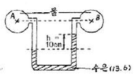
- 1.260kg/cm2
- 0.126kg/cm2
- 1.360kg/cm2
- 0.136kg/cm2
(정답률: 40%)
43. 길이가 400m이고 직경이 25cm인 관에 평균유속 1.32m/sec로 물이 흐르고 있다. 관 마찰계수가 0.0422일 때 손실수두는?
- 60m
- 6m
- 4.54m
- 1.20m
(정답률: 48%)
44. k가 엄격히 말하면 월류수심 h등에 관한 함수이지만, 근사적으로 상수라 가정하면 직사각형 위어(Weir)의 유량 Q와 h의 일반적인 관계로 옳은 것은?
- Q=kㆍh
- Q=kㆍh3/2
- Q=kㆍh1/2
- Q=kㆍh2/3
(정답률: 60%)
45. 오리피스(orifice)에서의 유량Q를 계산할 때 수두 H의 측정에 1%의 오차가 있으면 유량계산의 결과에는 얼마의 오차가 생기는가?
- 0.3%
- 0.4%
- 0.5%
- 0.65%
(정답률: 42%)
46. 스톡스(Stokes)의 법칙에 있어서, 항력계수 CD의 값으로 옳은 것은? (단, Re는 Reynolds 수이다.)
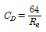
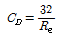
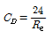
(정답률: 46%)
47. 그림과 같은 심정호에서 양수량은?
- 0.062m3/sec
- 0.071m3/sec
- 0.⑤4m3/sec
- 0.085m3/sec
(정답률: 36%)
48. 이중 누가 우량분석(double mass cyrve analysis)에 관한 설명으로 가장 적합한 것은?
- 유역의 평균강우량을 결정하는데 쓴다.
- 구역별 적합한 강우강도식의 산정을 위해 쓴다.
- 일부 결측된 강우기록을 보충하기 위하여 쓴다.
- 자료의 일관성이 있도록 하는데 교정용으로 쓴다.
(정답률: 50%)
49. 합리식에 관한 설명 중 틀린 것은?
- 작은 우역면적에 적용한다.
- 불투수층 지역이라 가정한다.
- 첨두유량은 도달시간 이후부터는 강우강도에 유역면적을 곱한 값이다.
- 강우강도를 고려할 필요가 없다.
(정답률: 35%)
50. 단위 유량도 작성시 필요 없는 사항은?
- 직접유출량
- 유효우량의 지속시간
- 유역면적
- 투수계수
(정답률: 59%)
51. 다음 중 침투능을 추정하는 방법은?
- Theissen 법
- ∅-index 법
- N-day 법
- DAD해석법
(정답률: 48%)
52. 얻어진 강우 기록으로부터 우량의 값, 유역면적 및 강우계속시간 등의 관계를 규명하는 것은?
- 유출함수법
- DAD해석
- 단위도법
- 비우량해석
(정답률: 45%)
53. 다음의 유량 중 수로폭이 7m인 직사각형 수로에 수심이 0.5m로 흐를 때 흐름이 사류가 되는 것은?
- 2.5m3/sec
- 4.5m3/sec
- 6.5m3/sec
- 8.5m3/sec
(정답률: 29%)
54. 토양면을 통해 스며든 물이 중력의 영향 때문에 지하로 이동하여 지하수면까지 도달하는 현상은?
- 침투(infiltration)
- 침투능(infiltration capacity)
- 침투율(infiltration rate)
- 침루(percolation)
(정답률: 48%)
55. 유체의 흐름에서 유속을 V, 시간을 t, 거리를 ℓ, 압력을 p라 할 때 다음 중 틀린 것은?
- 정류:

- 부정류:

- 정류:

- 부정류:

(정답률: 21%)
56. 경심이 5m이고 동수경사가 1/200 인 관로에서의 Reynolds 수가 1000인 흐름으로 흐를 때 관속의 유속은?
- 7.5 m/sec
- 5.5 m/sec
- 3.5 m/sec
- 2.5 m/sec
(정답률: 40%)
57. 양수발전소의 펌프용 전동기 동력이 20000kW, 펌프의 효율은 88%, 양정고는 150m, 손실수두가 10m 일 때 양수량은?
- 15.5m3/sec
- 14.5m3/sec
- 11.2m3/sec
- 12.0m3/sec
(정답률: 45%)
58. 다음 중 개수로 흐름에 관한 설명으로 옳은 것은?
- 수면 자체가 동수경사선이 된다.
- 동수경사선은 항상 수면 위쪽에 위치한다.
- 동수경사선은 항상 수면 아래에 위치한다.
- 동수경사선은 일부분만이 수면 위쪽에 위치한다.
(정답률: 12%)
59. 물이 하상의 돌출부를 통과할 경우 비에너지와 비역의 변화는 어떠한가?
- 비에너지와 비력이 모두 감소한다.
- 비에너지는 감소하고 비력은 일정하다.
- 비에너지는 증가하고 비력은 감소한다.
- 비에너지는 일정하고 비력은 감소한다.
(정답률: 44%)
60. 축척이 1/50인 하천 수리모형에서 원형 유량 10000m3/sec에 대한 모형 유량은?
- 0.566m3/sec
- 4.000m3/sec
- 14.142m3/sec
- 28.284m3/sec
(정답률: 43%)
4과목: 철근콘크리트 및 강구조
61. 강도설계법의 기본가정 중 옳지 않은 것은?
- 철근과 콘크리트의 변형률은 중립축에서의 거리에 비례한다.
- 콘크리트 압축연단의 최대변형률은 0.003이다.
- 항복강도 fy이하에서의 철근의 응력은 그 변형률의 Es배로 취한다.
- 휨응력 계산에서 콘크리트의 압축강도는 무시한다.
(정답률: 42%)
62. b=300mm, d=550mm, d'=50mm, As=4500mm2, As'=22000mm2인 복철근 직사각형 보가 연성파괴를 한다면 설계 휨모멘트 강도(∅Mn)는 얼마인가? (단, fck=21MPa, fy=300MPa)
- 516.3kNㆍm
- 565.3kNㆍm
- 599.3kNㆍm
- 612.9kNㆍm
(정답률: 40%)
63. 그림과 같은 T형 단면의 등가 직사각형의 응력깊이 a를 구하면? (단, 과소 철근보이고, fck=21MPa, fy=400MPa, As=1926mm2)
- a=34.3mm
- a=65.8mm
- a=71.6mm
- a=79.2mm
(정답률: 25%)
64. 강도 설계법에 의한 철근 콘크리트 보의 설계에서 철근 비를 균형 철근비의 75% 이하로 제한하는 가장 중요한 이유는?
- 인장 쪽부터 먼저 연성파괴를 유도하기 위해
- 과소 철근보가 더 경제적이기 때문에
- 압축 쪽부터 먼저 취성파괴를 유도하기 위해
- 인장 쪽부터의 급격한 취성 파괴를 피하기 위해
(정답률: 25%)
65. 아래 PC보에서 PS강재를 포물선으로 배치하여 프리스트레스트 힘 P=2000kN이 주어질 때 프리스트레스트에 의한 상항력 u는? 9단, b=400mm, h=600mm, s=200mm)
- 63kN/m
- 52kN/m
- 43kN/m
- 32kN/m
(정답률: 48%)
66. 다음과 같은 옹벽의 각 부분 중 T형보로 설계해야 할 부분은?
- 앞 부벽식 옹벽의 저판
- 뒷 부벽식 옹벽의 저판
- 앞부벽
- 뒷부벽
(정답률: 47%)
67. 다음은 L형강에서 인장력을 검토를 위한 순폭계산에 대한 설명이다. 틀린 것은?
- 전개 총폭(b)=b1+b2-t이다.
 경우 순폭(bn)=b-d이다.
경우 순폭(bn)=b-d이다.- 리벳선간거리(g)=g1-t이다.
 인 경우 순폭
인 경우 순폭  이다.
이다.
(정답률: 44%)
68. 단면이 300×400mm이고, 150mm2의 PS 강선 4개를 단면 도심축에 배치한 프리텐션 PS 콘크리트 부재가 있다. 초기 프리스트레스 일.1000MPa때 콘크리트의 탄성 수축에 의한 프리스트레스의 손실량은?
- 25MPa
- 30MPa
- 34MPa
- 42MPa
(정답률: 27%)
69. 슬래브의 구조세목을 기술한 것 중 잘못된 것은?
- 1방향 슬래브의 두께는 최소 100mm 이상이라야 한다.
- 1방향 슬래브의 정철근 및 부철근의 중심 간격은 최대 휨모멘트가 일어나는 단면에서는 슬래브 두께의 2배 이하이어야 하고, 또한 300mm 이하로 하여야 한다.
- 1방향 슬래브이 수축ㆍ온도철근은 슬래브 두께의 3배 이하, 또한 400mm 이하로 하여야 한다.
- 2방향 슬래브의 위험단면에서 철근 간격은 슬래브 두께의 2배 이하 또는 300mm 이하로 하여야 한다.
(정답률: 40%)
70. 계수하중 U를 구하기 위해 사용하중에 곱해주는 하중계수가 잘못 기술된 것은? (단, D: 사하중, L : 활하중, W : 풍하중, E : 지진하중)
- U=1.4D+1.7L
- U=0.9D+1.3L
- U=0.75(1.4D+1.7L+1.4W)
- U=0.75(1.4D+1.7L+1.8E)
(정답률: 9%)
71. 계수전단력 Vu가 øVc의 1/2을 초과하고 øVc이하인 경우에는 최소의 전단철근량을 배치하도록 규정하고 있다. 이 최소의 전단철근량이 옳게 된 것은? (단, s는 전단철근의 간격)
(정답률: 24%)
72. 계수하중에 의한 모멘트가 Mu=400kNㆍm인 단철근 직사각형보의 소요 유효깊이 d의 최소값은? (단, ρ=0.015, b=400mm, fck=24MPa, fy=400MPa)
- 420mm
- 480mm
- 540mm
- 580mm
(정답률: 32%)
73. 그림의 단면에 비틀린에 대해서 휭철근을 설계한결과 D10 폐쇄스터럽이 130mm 간격으로 배치되게 되었다. 이 단면에 필요한 종방향철근의 단면적(At)으로 맞는 것은? (단, fck=21MPa, fyv=fyi=400MPa이다.) fyv:횡방향 비틀림 보강철근의 설계기준 항복강도, fyi: 종방향 비틀림 보강철근의 설계기준 항복 강도
- Aℓ를 배치할 필요가 없다.
- Aℓ=932mm2
- Aℓ=678mm2
- Aℓ=344mm2
(정답률: 20%)
74. 강도설계법에서 인장철근 D25(공칭직경 db=25.4mm)을 정착시키는데 소요되는 기본 정착길이는? (단, fck=24MPa, fy=300MPa으로 한다.)
- 682mm
- 755mm
- 827mm
- 934mm
(정답률: 50%)
75. P=300kN의 인장응력이 작용하는 판두께 10mm인 철판에, ∅19mm인 리벳을 사용하여 접합 할 때의 소요 리벳 수는? (단, 허용전단응력=110MPa, 허용지압응력=220MPa)
- 8개
- 10개
- 12개
- 14개
(정답률: 40%)
76. 보의 길이 l=20m, 활동량 △l=4mm, Ep=200,000MPa일 때 프리스트레스 감소량 △fp는? (단, 일단 정착임)
- 40MPa
- 30MPa
- 20MPa
- 15MPa
(정답률: 49%)
77. 강재의 부식에 대한 환경조건이 건조한 환경이며 이형 철근을 사용한 건물이외의 구조물인 경우 허용 균열 폭은? (단, 콘크리트의 최소 피복두께는 60mm 이다.)
- 0.36mm
- 0.30mm
- 0.24mm
- 0.21mm
(정답률: 12%)
78. bw=250mm, d=500mm, fck=21MPa, fy=400MPa인 직사각형보에서 콘크리트가 부담하는 설계전단강도(∅Vc)는?
- 73.4kN
- 76.4kN
- 82.2kN
- 91.5kN
(정답률: 30%)
79. 콘크리트 속에 묻혀 있는 철근이 콘크리트와 일체가 되어 외력에 저항할 수 있는 이유로 적합하지 않은 것은?
- 철근과 콘크리트 사이의 부착강도가 크다.
- 철근과 콘크리트의 열팽창계수가 거의 같다.
- 콘크리트 속에 묻힌 철근은 부식하지 않는다.
- 철근과 콘크리트의 탄성계수가 거의 같다.
(정답률: 48%)
80. 나선철근 압축부재 단면의 심부지름이 400mm, 기둥 단면 지름이 500mm 인 나선철근 기둥의 나성철 근비는 최소 얼마이상이어야 하는가? (단, fck=24MPa, fy=400MPa)
- 0.0133
- 0.0201
- 0.0248
- 0.0304
(정답률: 29%)
5과목: 토질 및 기초
81. 어느 점토의 체가름 시험과 액:소성시험 결과 0.002mm(2μm)이하의 입경이 전시료 중량의 90%, 액성한계 60%, 소성한계 20% 이었다. 이 점토 광물의 주성분은 어느 것으로 추정되는가?
- kaolinite
- lllite
- Halloysite
- Montmorillonite
(정답률: 65%)
82. 흙의 동상현상(棟上現象)에 대하여 옳지 않은 것은?
- 점토는 동결이 장기간 계속될 때에만 동상을 일으키는 경향이 있다.
- 동상현상은 흙이 조립일수록 잘 일어나지 않는다.
- 하층으로부터 물의 공급이 충분할 때 잘 일어나지 않는다.
- 깨끗한 모래는 모관상승 높이가 작으므로 동상을 일으키지 않는다.
(정답률: 33%)
83. 그림과 같은 무한사면에서 A점의 간극수압은?
- 2.65t/m2
- 2.82t/m2
- 0.96t/m2
- 1.60t/m2
(정답률: 23%)
84. 아래 그림과 같은 모래지반에서 깊이 4m지점에서의 전단강도는? (단, 모래의 내부마찰각 ∅=30°이며, 점착력은 C=0)
- 4.50t/m2
- 2.77t/m2
- 2.32t/m2
- 1.86t/m2
(정답률: 64%)
85. 한 요소에 작용하는 응력의 상태가 그림과 같다면 n-n면에 작용하는 수직응력과 전단응력은?
- 15kg/cm2 5kg/cm2
- 10kg/cm2 5kg/cm2
- 20kg/cm2 10kg/cm2
(정답률: 45%)
86. Rankine 토압이론의 가정 사항 중 옳지 않은 것은?
- 흙은 균질의 분체이다.
- 지표면은 무한히 넓게 존재한다.
- 분체는 입자간의 점착력에 의해 평행을 유지한다.
- 토압은 지표면에 평행하게 작용한다.
(정답률: 45%)
87. 흙을 다지면 흙의 성질이 개선되는데 다음 설명 중 옳지 않은 것은?
- 투수성이 감소한다.
- 부착성이 감소한다.
- 흡수성이 감소한다.
- 압축성이 작아진다.
(정답률: 59%)
88. 다음 현장시럼 중 Sounding의 종류가 아닌 것은?
- 평판재하 시험
- Vane 시험
- 표준관입 시험
- 동적 원추관입 시험
(정답률: 57%)
89. Paper Drain설계시 Drain Paper의 폭이 10cm, 두께가 0.3cm일 때 드레인 페어퍼의 등치환산원의 직경이 얼마이면 Sand Drain과 동등한 값으로 볼 수 있는가? 9단, 형상계수 : 0.75)
- 5cm
- 7.5cm
- 10cm
- 15cm
(정답률: 45%)
90. 연약 점토지반 개량공법으로서 다음 중 옳지 않은 것은?
- 샌드드레인 공법
- 프리로딩 공법
- 바이브로 플로테이션 공법
- 생석회 말뚝 공법
(정답률: 58%)
91. 모래 지반의 상대밀도를 추정하는데 많이 이용하는 실험방법은?
- 원추관입 시험
- 평판재하 시험
- 표준관입 시험
- 베인전단 시험
(정답률: 38%)
92. 압밀시험에서 얻은 e-logP 곡선으로 구할 수 있는 것이 아닌 것은?
- 선행압밀하중
- 팽창지수
- 압축지수
- 압밀계수
(정답률: 39%)
93. 내부마찰각이 30°, 단위중량이 1.8t/m3ㅇㄴ 흙의 인장균열깊이가 3m일 때 점착력은?
- 1.56 t/m2
- 1.67 t/m2
- 1.75 t/m2
- 1.81 t/m2
(정답률: 55%)
94. 다짐곡선에 대한 설명이다. 잘못된 것은?
- 다짐에너지를 증가시키면 다짐곡선은 왼쪽 위로 이동하게 된다.
- 사질성분이 많은 시료일수록 다짐곡선은 오른쪽위에 위치하게 된다.
- 점성분이 많은 흙일수록 다짐곡선은 넓게 퍼지는 형태를 가지게 된다.
- 점성분이 많은 흙일수록 오른쪽 아래에 위치하게 된다.
(정답률: 25%)
95. 크기가 1.5m×1.5m인 직접기초가 있다. 근입깊이가 1.0m일 때, 기초가 받을 수 있는 최대허용하중을 Terzaghi 방법에 의하여 구하면? (단, 기초지반의 점착력은 1.5 t/m2, 단위중량은 1.8 t/m2, 마찰각은 20°이고 이 때의 지지력 계수는 Nc=1769, Nq=7.44, Nr=3.64이며, 허용지지력에 대한 안전율은 4.0으로 한다.
- 약 29t
- 약 39t
- 약 49t
- 약 59t
(정답률: 22%)
96. 쓰레기매립장에서 누출되어 나온 침출수가 지하수를 통하여 100미터 떨어진 하천으로 이동한다. 매립장 내부와 하천의 수위차가 1미터이고 포화된 중간지반은 평균 투수계수 1×10-3cm/sec의 자유면대수층으로 구성되어 있다고 할 때 매립장으로부터 침출수가 하천에 처음 도착하는데 걸리는 시간은 몇 년인가? (이때, 대수층의 간극비(e)는0.25이었다.)
- 3.45년
- 6.34년
- 10.56년
- 17.23년
(정답률: 26%)
97. 흙의 연경도(Consistency)에 관한 사항 중 옳지 않은 것은?
- 소성지수는 점성이 클수록 크다.
- 터프니스지수는 Colloid가 많은 흙일수록 값이 작다.
- 액성한계시험에서 얻어지는 유동곡선의 기울기를 유동지수라 한다.
- 액성지수와 컨시스턴시지수는 흙지반의 무르고 단단한 상태를 판정하는데 이용된다.
(정답률: 37%)
98. 간극률이 50%, 함수비가 40%인 포화토에 있어서 지반의 분사현상에 대한 안전율이 3.5라고 할 때 이 지반에 허용되는 최대 동수구배는?
- 0.21
- 0.51
- 0.61
- 1.00
(정답률: 35%)
99. 실내시험에 의한 점토의 강도 증가율(Cu/P)산정 방법이 아닌 것은?
- 소성지수에 의한 방법
- 비배수 전단강도에 의한 방법
- 압밀비배수 삼축압축시험에 의한 방법
- 직접전단시험에 의한 방법
(정답률: 41%)
100. 2m×3m 크기의 직사각형 기초에 6t/m2의 등분포하중이 작용할 때 기초 아래 10m 되는 깊이에서의 응력증가량을 2:1 분포법으로 구한 값은?
- 0.23t/m2
- 0.54t/m2
- 1.33t/m2
- 1.83t/m2
(정답률: 41%)
6과목: 상하수도공학
101. 정수처리의 단위공정인 오존처리법에 대한 설명으로 옳지 않은 것은?
- 오존은 자체의 높은 산화력으로 염소에 비하여 높은 살균력을 가지고 있다.
- 맛ㆍ냄새물질과 색도제거의 효과가 우수하다.
- 유기물질의 생분해성을 증가시킨다.
- 배오존의 생성 및 대기 중 방출로 노동안전위생 또는 환경상의 긍정적인 효과를 기대할 수 있다.
(정답률: 39%)
102. 구경(口徑)400mm인 모터의 직결펌프에서 양수량 10m2/분, 전양정 40m, 회전수 1,⑤0rpm일 때 비교 회전도(Ns)는?
- 209
- 389
- 468
- 548
(정답률: 35%)
103. 일반적인 표준 활성 슬러지 공정을 바르게 나타낸 것은?
- 침사지-1차침전지-폭기조-2차침전지-소독조
- 1차침전지-소독조-폭기조-2차침전지-소독기
- 침사지-소독조-1차침전지-폭기조-2차침전지
- 침사지-폭기조-1차침전지-2차침전지-소독조
(정답률: 40%)
104. 다음 하수의 수질에 관한 설명 중 틀린 것은?
- DO란 용존산소량을 말하며 용존산소는 수온 등의 영향을 받는다.
- BOD란 생화학적 산소요구량이며 하수 중의 무기물양을 나타내는 수질지표이다.
- SVI란 활성오니의 침전특성을 나타내는 지표이다.
- 작열 잔유물은 회분 또는 무기물질이라 할 수 있다.
(정답률: 36%)
1⑤. 유량 300m2/hr의 물을 높이 10m 까지 양수하고자 한다. 펌프효율 75%일 때 펌프의 소요동력은 얼마인가? (단, 물의 비중은 1이다.)
- 10.89kW
- 14.62kW
- 657.89kW
- 1111.11kW
(정답률: 35%)
106. 자연유하식인 경우 도수관이 평균유속의 최소한도는?
- 0.01 m/sec
- 0.1 m/sec
- 0.3 m/sec
- 3 m/sec
(정답률: 46%)
107. 펌프의 흡입관에 대한 다음 사항 중 틀린 것은?
- 충분한 흡입수두를 가질 수 있도록 한다.
- 흡입관은 가능하면 수평으로 설치되도록 한다.
- 흡입관에는 공기가 혼입되지 않도록 한다.
- 펌프 한 대에 하나의 흡입관을 설치한다.
(정답률: 43%)
108. P도시에서 2007년도의 인구를 현재 인구라고 할 때 현재부터 10년후의 인구를 등비급수법으로 추정한 값으로 옳은 것은?
- 약 47,5000명
- 약 49,700명
- 약 53,800명
- 약 56,300명
(정답률: 43%)
109. 관거별 계획하수량 선정시 고려해야 할 사항으로 적합하지 않은 것은?
- 오수관거는 계획시간대오수량을 기준으로 한다.
- 우수관거에서는 계획우수량을 기준으로 한다.
- 합류식 관거는 계획시간 최대 오수량에 계획우수량을 합한 것을 기준으로 한다.
- 차집관거는 계획시간최대오수량에 우천시 계획우수량을 합한 것을 기준으로 한다.
(정답률: 55%)
110. 원형 하수관에서 유량이 최대가 되는 때는?
- 가득차서 흐를 때
- 수심이 92~94%파서 흐를 때
- 수심이 80~85%파서 흐를 때
- 수심이 72~78%파서 흐를 때
(정답률: 53%)
111. 활성슬러지법에서 BOD 용적부하를 옳게 표현한 것은?
(정답률: 43%)
112. 합류식 하수도는 강우시에 처리되지 않은 오수의 일부가 하천 등의 공공수역에 방류되는 문제점을 갖고 있다. 이에 대한 대책으로 적합하지 않은 것은?
- 차집관거의 축소
- 실시간 제어방법
- 스윌조절조(swirl regulator)설치
- 우수체수지(雨水滯水地) 설치
(정답률: 75%)
113. 다음 하수관거의 유속과 경사에 대한 설명으로 옳은 것은?
- 경사는 하류로 갈수록 완만하게, 유속은 하류로 갈수록 빠르게
- 경사는 하류로 갈수록 완만하게, 유속은 하류로 갈수록 느리게
- 경사는 하류로 갈수록 급하게, 유속은 하류로 갈수록 빠르게
- 경사는 하류로 갈수록 급하게, 유속은 하류로 갈수록 느리게
(정답률: 63%)
114. 하수도 기본계획에서 계획목표년도의 인구추정 방법이 아닌 것은?
- 지수함수곡선식에 의한 방법
- Logistic 곡선식에 의한 방법
- 생잔모형에 의한 조성법(Cohort method)
- Stevens 모형에 의한 방법
(정답률: 46%)
115. BOD5가 126mg/L인 하수의 최종 BOD로 가장 가까운 값은? (단, 자연대수(e)기준, 탈산소계수K=0.20/day)
- 149.3 mg/L
- 174.3 mg/L
- 199.3 mg/L
- 249.3 mg/L
(정답률: 39%)
116. 폭기조 MLSS를 1L 실린더에 담고 30분간 정지시켜 침전된 슬러지의 부피를 측정한 결과 600mL이었다. MLSS농도가 3000mg/L이었다면 이 슬러지의 용적지수(SVI)는?
- 100
- 150
- 200
- 250
(정답률: 29%)
117. 상수도는 생활기반시설로서 영속성과 중요성을 가지고 있으므오 안정적이도 효율적으로 운영되어야 하며 가능한 한 장기간으로 설정하는 것이, 기본이다. 보통상수도의 기본 계획 시 계획(목표)년도는 얼마를 표준으로 하는가?
- 3~년
- 5~10년
- 15~20년
- 25~30년
(정답률: 48%)
118. 침각속도 0.3mm/sec를 갖는 모든 입자를 100%제거하기 위한 침전조를 설계하고자 한다. 유량이 10m3/min인 조건하에서 체류시간이 2시간인 침전조의 최소 제원은? (단, 침전조는 길이가 폭의 4배인 직사각형으로 한다.)
- 5.89×23.56m
- 11.79×47.16m
- 17.67×70.7m
- 23.56×94.28m
(정답률: 32%)
119. 다음 중 수원의 구비요건이 아닌 것은?
- 수량이 풍부하여야 한다.
- 수질이 좋아야 한다.
- 가능한 한 낮은 곳에 위치하여야 한다.
- 소비자로부터 가까운 곳에 위치하여야 한다.
(정답률: 48%)
120. 다음 중 상수도시설인 착수정에 대한 설명으로 잘못된 것은?
- 착수정은2지 이상으로 분할하는 것이 원칙이다.
- 부유물이나 조류 등을 제거할 필요가 있는 장소에는 스크린을 설치한다.
- 착수정의 고수위와 주변벽체 상단 간에는 30cm 이하의 여유를 두어야 한다.
- 착수정의 수위가 고수위이상으로 올라가지 않도록 월류관이나 월류위어를 설치하여야 한다.
(정답률: 37%)
여기서는 왼쪽에 있는 물체와 오른쪽에 있는 물체가 균형을 이루고 있으므로, 왼쪽 무게와 왼쪽에서 오른쪽까지의 거리의 곱과 오른쪽 무게와 오른쪽에서 왼쪽까지의 거리의 곱이 같습니다.
따라서, (3kg) × (6cm) = (2kg) × (x cm + 6cm) 입니다.
이를 정리하면, 18 = 2x + 12 이므로, x = 3cm 입니다.
하지만, 여기서 주의할 점은 문제에서 요구하는 것은 합력의 위치이므로, 왼쪽 물체와 오른쪽 물체의 중심점을 구하고 그 중간 지점이 합력의 위치가 됩니다.
왼쪽 물체의 중심점은 3cm, 오른쪽 물체의 중심점은 9cm 이므로, 합력의 위치는 (3cm + 9cm) ÷ 2 = 6cm + 3cm = 9cm + 1cm = 10cm 입니다.
따라서, 정답은 "10cm" 입니다.